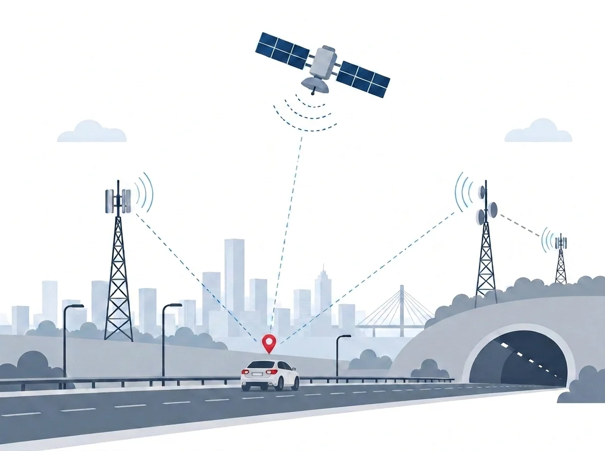

YERKON
YERKON, karayolu için uydudan bağımsız, yere kurulu bir konumlandırma katmanıdır: GNSS kesildiğinde konumu o verir, GNSS çalışırken de onun verdiği konumu doğrular. Yol kenarında zaten duran direklere ve kabinlere düşük maliyetli yayın birimleri takılır; araçtaki alıcı bu birimlere olan uzaklığını ölçerek konumunu kendisi hesaplar.
Proje dokümanı: YERKON raporu (PDF, 20 sayfa)

Simülasyonun doldurduğu üç satır. Her biri, hataların yüzde 95'inin altında kaldığı yatay sapmayı gösteriyor ve her biri Ankara'nın gerçek arazisi üzerinde çalıştırıldı.
Ne öneriyor
Ulaştırma ve Altyapı Bakanlığı'nın elektrik ve haberleşme hattına bağlı noktaları zaten var: akıllı ulaşım sistemi kabinleri, yol kenarı üniteleri, trafik ışıkları, tünel aydınlatması ve ücretli yol gişeleri. YERKON bu noktalara düşük maliyetli bir radyo yayın birimi ekler. Birim, kimliğini ve kurulumda ölçülmüş konumunu yayınlar. Bu noktaların seyrek kaldığı yerde yol boyundaki diğer direkler kullanılıyor: simülasyonda şehirde aydınlatma direkleri, kırsalda çoğunlukla elektrik dağıtım direkleri.
Bir yayın birimi 1.000 adetlik üretimde, kutusu, baskılı devresi, dizgisi ve lehimiyle yaklaşık 1.400 lira. Hedef, AUS noktalarında zaten duran elektrik ve haberleşme altyapısının yeniden kullanılması; maliyeti aşağıda tutan da bu.
YERKON yalnızca GNSS kesildiğinde devreye giren bir yedek değildir; GNSS çalışırken de onu denetleyen bağımsız bir doğrulama katmanıdır. Alıcı, uydunun verdiği konumu YERKON'un verdiği konumla sürekli karşılaştırır; ikisi birbirinden ayrıldığında karıştırma ya da aldatma (spoofing) girişimi fark edilir.
Kimin işine yarar
- Acil yardım ve afet. 112 ve AFAD ekipleri tünelde, kapalı alanda, yüksek binaların arasında ve afet bölgesinde de görünür kalır.
- Karayolu, kargo ve toplu taşıma. Kamu araçları, otobüsler ve tehlikeli madde taşıyan araçlar uydudan bağımsız ikinci bir takip kazanır.
- Tüneller. Uydunun girmediği tünellerde konum kesintisiz sürer; ilk kurulum için en uygun yer.
- Karıştırma ve aldatma haritası. Uydu konumu ile YERKON konumu ayrıştığında olay merkeze iletilir; Bakanlık ülke genelinde bir olay haritası elde eder.
Projenin durumu
- Tamamlandı: simülasyon. Şehir içi, kırsal ve tünel, Ankara'nın gerçek arazisinde; sonuçlar Karşılaştırma sayfasında.
- Tamamlandı: tasarım ve maliyet. Yayın birimi ve alıcıların parça listesi, 1.000 adetlik fiyatları ve mevzuat incelemesi.
- Sonraki adım: ekipteki hazır donanımla denemeler. Haberleşme, kapsama, konumlandırma ve şifreleme mantığı ekibin elindeki cihazlarla sınanacak.
- Ardından: 10-15 birimlik bir koridor. Özel kartlar üretildikten sonra seçilecek bir ulaşım koridoruna 10-15 yayın birimi kurulacak.
- Henüz yapılmadı: saha ölçümü. Sitedeki doğruluk ve kapsama sayıları simülasyon sonucudur.
Sayfalar
Ekip ve iletişim
Simülasyonun kodu ve yöntemi: GitHub